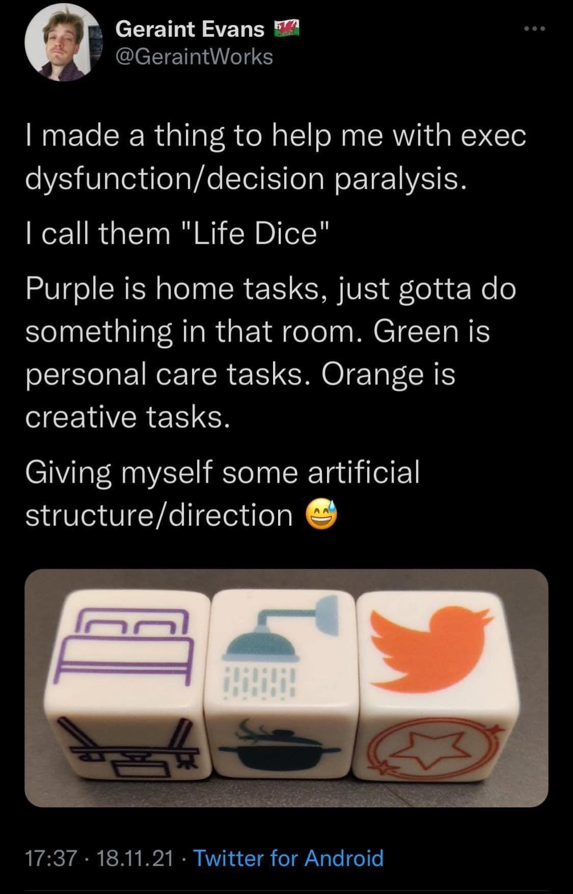

The idea of the 'Chore Dice' came from the picture to the right in which the twitter user @GeraintWorks created physical dice for 'artificial structure' in their life. I cannot make those dice, but I can make some digital equivalents, which are interactive. The first die is the 'Home Tasks', the second die is the 'Personal Care Tasks' and the last die is 'Creative Tasks' in which I took the liberty of polling internet strangers for popular votes in this category.
